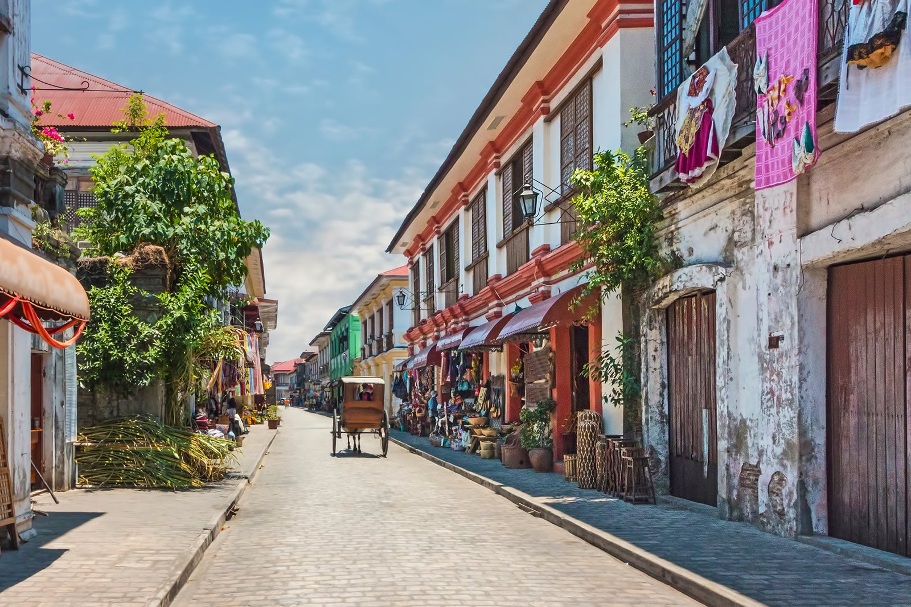

Places And Tourists Spots
Siargao
Siargao made its first claim to fame as the Philippines’ surfing capital, and recently as the “Best Island in the World” (awarded by Condé Nast readers for 2018).
This paradise has been on my favorites list ever since my first trip to the island a decade ago. What impressed me the most were the enchanting lagoons of Sohoton Cove, a natural wonder that’s well worth the 2-hour detour from the Cloud 9 surfing beach. The main island is filled with pristine natural spots as well, including white sand beaches, stunning islets, vast coconut forests, cool tidal pools & more. If you want to enjoy a laidback island lifestyle, Siargao is one of the best places that tourists can go to. You’ll find a mix of “foreign” and “local” here. It is remote yet accessible, and not too crowded despite the coming of new developments in recent years.

Location: Surigao del Norte province, Caraga Region, Northeast Mindanao.
El Nido
You came to the country to see spectacular beaches and island views. El Nido in Palawan province will not disappoint. In terms of spectacular “over-the-water” sea views, El Nido is my favorite in the Philippines. Imagine hidden lagoons, uninhabited white sand beaches, and massive forest-covered limestone mountains rising out of pristine tropical waters. The “SEAnery” here rivals popular destinations in Asia like Phi Phi/Krabi Islands (Thailand) and Ha Long Bay (Vietnam). The experience of spending a whole day out on the islands is nothing short of incredible. The area of Bacuit Bay is spread over a large area, so spend at least two full days for the island hopping tours (Tour A & Tour C are the best).

Location: Northern Palawan province, MIMAROPA Region (West Central Philippines)
Coron
In contrast to El Nido’s amazing “over water” views, go to Coron for spectacular underwater views. Here, you can see colorful coral gardens, pristine waters, lots of marine life, and even sunken WWII Japanese shipwrecks. Don’t get me wrong, Coron can hold its own when it comes to scenic views over the water as well. This paradise is home to hidden emerald/blue lagoons surrounded by limestone cliffs. There’s no shortage of incredibly beautiful fine white sand beaches in Coron either.

Location: Northern Palawan province, MIMAROPA Region (West Central Philippines).
Cebu
Cebu is the country’s #1 most visited tourist destination, and for good reason. It is unrivaled in offering the widest range of things to do and attractions. Cebu is like the “Jack of all trades” among tourist spots in the Philippines.
You can enjoy scenic natural sites (waterfalls, beaches, mountain views etc.), have exciting wildlife encounters, join a colonial heritage tour, shop at some of the World’s largest malls, or indulge yourself in local food including the prized Cebu Lechon! You can do all of these easily while staying at a luxury resort in Mactan Island, centrally located hotel/airbnb in the city, or a peaceful beachfront resort in the countryside. Your choice!
If that’s not enough, you can easily hop to nearby islands like Bohol, Negros (Dumaguete) or other major cities. Take full advantage of Cebu’s strategic location in Central Philippines and well-connected flight/ferry network.

Location: Central Visayas (Central Philippines).
Boracay Island & Aklan
Boracay is a vacationer’s paradise. Taking center stage is 4-kilometer White Beach, prized for its incredibly inviting blue waters, fine white sand, and perfect sunsets. This island is the place to go if you want to take it easy and you’re looking forward to enjoying a tropical resort experience. As you can expect, Boracay caters to a more upscale crowd, but don’t fret, there are many budget-friendly options available. Boracay is small but packs a lot of attractions. Here you can find excellent dining, a wide variety of places to stay, souvenir shopping, and lots of fun water activities, and some nightlife all in one sandy stretch.
Boracay’s White Beach is a class of its own when it comes to how fine and white the sand is. From my extensive travels in the country, there’s only one lengthy beach that has sand whiter and finer than White Beach. You can find it in the group of islands featured next on this list.

Location: Aklan province, Western Visayas region (Central Philippines).
Batanes Islands
Batanes is the northernmost province of the Philippines. These remote islands are shaped by volcanic forces and strong typhoons. The natural landscape of Batanes is distinct from other parts of the Philippines. Here, you’ll find vibrant green rolling hills, grazing cows, steep seaside cliffs, sparkling clear blue waters, traditional stone houses, and iconic lighthouses. Travelers often describe its Batanes’ beauty as wild, overwhelming, and incredibly scenic. Looking at pictures and vlogs, I can see why it’s a popular choice among adventure seekers.

Location: Cagayan Valley region (Northern Philippines)
Banaue, Ifugao
Banaue is home to the famous Banaue Rice Terraces, another must-see attraction in the Cordillera region. Hand-carved by the Ifugao people some 2,000 years ago, these extraordinary rice paddies are terraced like staircases for giants and follows the contours of entire mountainsides. Banaue is also the gateway to the Ifugao Rice Terraces, included in UNESCO’s list of World Heritage Sites. Have a memorable local experience by spending the night at a homestay in one of the small villages like Batad or Banga-an. Get immersed in the culture of the Ifugao people, wake-up to a view of the rice terraces with a hot cup of local coffee, and go on the breathtaking hike to Tappiya Waterfalls.

Location: Ifugao province, Cordillera Region.
Vigan
Vigan is the best-preserved Spanish-colonial town in Asia. If you’re a lover of old cities, this UNESCO World Heritage Site is a must-visit. You’ll feel like you’ve traveled back in time (to 16th-century Philippines) as you explore Vigan. This heritage city is filled with cobblestone paths, horse-drawn carriages, centuries-old churches, and buildings. Get the ultimate Vigan experience by booking your room at one of the old Spanish-colonial homes.
Location: Ilocos Norte province, Ilocos region, Luzon (Northern Philippines).
Iligan
Iligan the “City of Majestic Waterfalls” deserves a spot on your bucketlist if you’re a lover of waterfalls (like me). This city in Northern Mindanao is home to many of the Philippines’ most beautiful waterfalls. My favorites in Iligan include (1) Tinago Falls with its incredibly enchanting blue-green pool surrounded by the rainforest, (2) Maria Cristina Falls (massive twin waterfall), and the remote (3) Limunsudan Falls (the highest two-tiered waterfall in the Philippines).
Location: Lanao del Norte province, Northern Mindanao region (Southern Philippines).
Manila
Manila offers many attractions for travelers. Historic Intramuros is a good place to start. This walled city is filled with Spanish-era architecture including the Manila Cathedral, Fort Santiago, and San Agustin Church (a UNESCO World Heritage Site). Meanwhile, Makati and Bonifacio Global City (BGC) are the best places to go to experience the nightlife, hip food scene, and the modern side of the city. Beat the tropical heat & shop at Manila’s massive malls. Metro Manila is home to many of the World’s largest malls including the ever-expanding Mall of Asia. Looking for a place to go near the airport? Visit the entertainment districts such as Newport City, City of Dreams, Solaire Resort, and Okada Manila.
Location: Metro Manila capital region, Luzon (Northern Philippines).
Bohol
Bohol is home to two of the Philippines’ most iconic attractions, often shown on tourism ads: The Chocolate Hills, and the bug-eyed Tarsier, one of the World’s smallest primates. This island in Central Philippines (near Cebu) offers so much more. In Panglao, you can stay at a nice hotel at one of the island’s many white-sand beach areas, go island hopping, enjoy diving, join an island hopping tour, and possibly have a dolphin encounter. If that’s not enough, you can enjoy a relaxing cruise along the pristine Loboc River, see the old Spanish-colonial heritage churches, Can-umantad waterfalls, Cadapdapan Rice Terraces, and remote Anda White Beach.
Location: Central Visayas (Central Philippines).
Puerto Princesa
Puerto Princesa is the capital and major flight gateway in Palawan. If you’re visiting El Nido, then Puerto Princesa, “The City in the Forest,” is worth a stopover. Start with a trip to Puerto Princesa Underground River, the 2nd longest navigable underground river in the world, listed as a World Heritage Site by UNESCO and New7Wonders of Nature. Then, spend a day beach bumming and snorkeling on an island hopping tour around Honda Bay. Don’t leave without going on the city tour and feasting on fresh seafood.

Location: Central Palawan province, MIMAROPA Region (West Central Philippines).
Iloilo
Located at the country’s geographical center, Iloilo is also known as the “Heart of the Philippines.” It is famous for its well-preserved heritage sites, distinct native cuisine, cheap seafood, and pristine natural sites. Bustling yet relaxed Iloilo City is one of the most livable cities in the country. A highly urbanized city that’s keen on preserving its cultural and natural heritage. Within an hour’s travel from the city center, you can find yourself along a peaceful beach in Guimaras Island, home to the World’s sweetest mangoes. Head to the islands of Gigantes, Sicogon, and Concepcion to see the stunning seascapes of Northern Iloilo. A drive to the south takes you to centuries-old Spanish-colonial churches including the Miagao Church, a UNESCO World Heritage Site. From Iloilo, you can also go on a land trip to other provinces in Panay Island — Antique, Capiz (Roxas City), and Aklan (Boracay).
Location: Western Visayas region (Central Philippines).
Davao
Considering a trip to Southern Philippines? Start with Davao City, the largest urban center in Mindanao. Located at the foot of Mount Apo, the PH’s tallest mountain, this sprawling metropolis is where you can meet the great Philippine Eagle, get a taste of the infamous Durian fruit, and enjoy day trips to refreshing natural sites like Eden Nature Park and Samal Island. Of course, it is also the gateway to beautiful spots in Davao region and Mindanao.
Samal Island is easily reached by ferry from Davao City. Enjoy a luxury stay at Pearl Farm Beach Resort, famous for its waterfront stilt cottages, or wander to the peaceful beaches of Talikud Island.
Cagayan de Oro & beyond
Cagayan de Oro, the largest city in Northern Mindanao, is dubbed as the “Adventure Capital of the Philippines”. This city is famous for its white water river rafting, river tubing, paragliding, nature parks. Cagayan de Oro is also a convenient hub for tourists visiting the majestic waterfalls of Iligan, scenic sites of Camiguin Island, and cool attractions of Bukidnon province.
Location: Northern Mindanao region (Southern Philippines).
Dumaguete & Negros Oriental
Extremely chill Dumaguete is the jump-off point to Apo Island. If swimming with sea turtles is on your bucketlist, one of the best places to go is Apo Island, a protected marine sanctuary with sprawling coral gardens. From Dumaguete, you can also visit Siquijor Island and the many waterfalls, lakes & mountain resorts of Negros Oriental province.
Location: Negros Oriental province, Central Visayas region (Central Philippines).
Legazpi, Bicol & Mayon Volcano
Legazpi is perhaps the most photogenic city in the Philippines. Here, the skyline view is dominated by Mayon Volcano, recognized as the World’s “perfect” cone-shaped volcano.
Legazpi serves as the gateway to Bicol, a region famous for the whale shark watching in Donsol, Sorsogon, gorgeous islands of Caramoan (Camarines Sur), and Calaguas (Camarines Norte), Misibis Bay Resort, and of course, delicious Bicolano dishes (Bicol Express!).
Location: Albay province, Bicol region, Luzon Island (Northern Philippines).
Tacloban, Leyte
Tacloban City, the regional capital of Eastern Visayas, is home to the San Juanico Bridge, the longest bridge in the Philippines and as the site of U.S. General Douglas MacArthur’s landing, a monumental event during WWII.
Eastern Visayas is a region blessed with many of the Philippines’ most awe-inspiring natural sights including Kalanggaman Island’s insanely beautiful sandbar, the incredible rock formations of Biri Island, majestic waterfalls of Samar and alluring Sambawan Island in Biliran province.
Location: Leyte province, Eastern Visayas region (Central Philippines).
Baguio & Benguet
Visit the Philippines’ summer capital. Baguio City offers a cool climate, urban comforts, pine-filled parks and an exciting food scene. There are a lot of fun day trips beyond the city as well such as the La Trinidad strawberry fields and flower farms in Benguet.

Location: Benguet province, Cordillera region, Luzon Island (Northern Philippines).
Subic Bay
Subic Bay is a popular destination for themed attractions and natural sites. Subic’s top tourist spots include the Pamulaklakin Nature Park, Boardwalk Park, Zoobic Safari, Ocean Adventure, Inflatable Island & duty-Free shopping malls.
Location: Zambales province, Central Luzon region (Northern Philippines).
Tagaytay & Taal Volcano
Tagaytay is a popular go-weekend vacation spot near Manila? Go on a 2-3 hour drive to Tagaytay, enjoy the cool mountain breeze, and see the iconic view of the highly active Taal Volcano.
Taal Volcano is famous for Vulcan Point, the world’s largest island within a lake (Crater Lake) that is situated on an island (Volcano Island/Taal Island) located in a lake (Lake Taal) within an island (Luzon) in the Pacific Ocean.
Location: Cavite-Batangas provinces, Southern Luzon (Northern Philippines).
Laoag & Ilocos Norte
Ilocos Norte and its capital city, Laoag, is one of the Philippines’ top heritage destinations. See the Paoay Church, included in UNESCO’s list of World Heritage Sites, and many other exquisite Spanish-colonial churches. Go farther north to find the iconic windmills, beautiful beaches, surfing, and coastal landscapes in Pagudpud and Burgos.
Location: Ilocos Norte province, Luzon Island (Northern Philippines).
Siquijor
Hop on a ferry from Dumaguete & wander around the mystical island of Siquijor. This island province is famous for its stunning beach coves, waterfalls, and as a home of mountain-dwelling mangkukulam (healers/Filipino witches).
Location: Central Visayas region (Central Philippines).
Enchanted River & Surigao del Sur
Endless stretches of white-sand beaches, not your only image of a perfect island getaway? Surigao del Sur province has many extraordinary sights for the off-beat traveler. See the majestic Tinuy-an Falls and bizarre Hinatuan Enchanted River, a magically clear, deep blue river that seems to spring from nowhere.

Location: Hinatuan, Surigao del Sur province, Caraga region, Mindanao (Southern Philippines).
Reference:
https://www.detourista.com/guide/philippines-best-places/